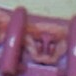

Error Detection Software and Implementation
The image acquisition and error-recognition pipeline is implemented in Python and runs directly on the Raspberry Pi 3.
The system operates in a fully event-driven manner: each activation of the microswitch triggers an image capture, an immediate crop of the region of interest (ROI), and a real-time evaluation of the yarn configuration using a log-likelihood ratio (LLR) classifier.
Dataset Development and Color-Specific Challenges
To train and evaluate the classifier, a dedicated dataset of cropped hook images was collected directly from the machine.
At present, the dataset includes three yarn colors:
- light blue
- purple
- fuchsia
Although these colors appear visually quite different in RGB, their behavior after preprocessing (grayscale conversion, CLAHE enhancement, ROI masking) is not uniform.
Preliminary qualitative inspection suggested that the fuchsia yarn could be challenging due to its visual similarity to the pink background of the machine.
However, subsequent experiments revealed that raw chromatic contrast is not the primary factor affecting detectability in the proposed NCC–LLR pipeline.
After grayscale conversion, the light blue yarn becomes closer in intensity to the machine background, resulting in lower separability between correct and defective configurations.
Conversely, the fuchsia yarn exhibits stronger and more consistent local texture variations within the discriminative ROI, which makes the LLR scores for (H_0) and (H_1) more distinct despite its low RGB contrast.
The purple yarn displays intermediate behavior, with moderate grayscale separability.
To further probe the limits of the method, additional experiments were conducted using a pale pink yarn whose color is almost indistinguishable from the background.
Under this condition, neither the NCC-based similarity nor the CLAHE-enhanced preprocessing provided sufficient discriminative information for reliable classification, and the LLR method consistently failed to separate the two hypotheses.
This extreme low-contrast scenario is therefore considered out of scope for the current handcrafted method and highlights the need for future solutions based on learned or color-invariant features.
 Light blue
Light blue
 Purple
Purple
 Fuchsia
Fuchsia
 Pale pink (failure)
Figure @fig:yarn_colors. Examples of yarn colors used in the dataset.
The pale pink yarn is almost indistinguishable from the machine background and cannot be reliably detected by the current method.
Synchronized Acquisition and ROI Extraction
Upon a rising edge from the microswitch (handled via the gpiozero library), the software captures a still image using the Picamera 2.1 interface.
Since only a small portion of the full frame contains the hook region, the image is immediately cropped according to a predefined ROI, specified either in relative coordinates or in absolute pixel values.
This cropping stage reduces computational cost and increases robustness by ensuring that the classifier operates on a stable and consistent portion of the scene.
Boundary checks are applied to avoid invalid crops in case of slight camera misalignment, which is important due to the sub-centimeter positioning precision required for hook-level inspection.
Preprocessing and Prototype Generation
The LLR classifier relies on two prototype images:
- a positive prototype representing correct yarn engagement;
- a negative prototype representing a hook that has failed to catch the yarn.
These prototypes are computed as the median of small training sets of positive and negative examples.
Before prototype computation, images undergo grayscale conversion, Gaussian denoising, and light contrast equalization using CLAHE, improving robustness to illumination variability and sensor noise.
Discriminative ROI Mask Estimation
The LLR classifier does not operate on the entire cropped image, but only within a discriminative region of interest (ROI).
This ROI is defined by a soft mask computed offline using a separate Python script (build_mean_diff_mask.py), which analyzes pre-cropped patches of both positive and negative examples.
The script takes as input two sets of images: a positive set (--pos) and a negative set (--neg).
All images are converted to grayscale, denoised, equalized with CLAHE, and resized to a common resolution of (76 ) pixels.
For each pixel location, the script computes a Fisher-like separability score:
\[ S(i,j) \propto \frac{|\mu_{\text{pos}}(i,j) - \mu_{\text{neg}}(i,j)|} {\sigma_{\text{pos}}(i,j) + \sigma_{\text{neg}}(i,j) + \varepsilon} \]
The resulting score map is normalized to ([0,1]) and restricted to a fixed rectangular zone corresponding to the physical region where the yarn intersects the hook.
Outside this area, the mask is set to zero so that the LLR classifier ignores those pixels.
To preserve local texture, the soft score map (S) is optionally smoothed with a bilateral filter.
A global threshold is then selected using Otsu’s method, producing a hard binary mask.
The script saves: - the soft mask (mask_soft.png) - the hard mask (mask_hard_otsu.png) - a visualization of the rectangular ROI
At runtime, the soft mask is used as a per-pixel weighting function in the NCC computation:
\[ s_{\text{pos}} = \text{NCC}(I, \mu_{\text{pos}}; \text{mask}), \qquad s_{\text{neg}} = \text{NCC}(I, \mu_{\text{neg}}; \text{mask}) \]
Among the available yarn colors, the fuchsia yarn was specifically included to demonstrate that the proposed method does not rely on RGB contrast.
Despite its visual similarity to the background, the preprocessing pipeline enables reliable detection.
 mask_soft.png
mask_soft.png
 mask_hard_otsu.png
mask_hard_otsu.png
Figure @fig:roi_masks. Visualization of the ROI masks used during computation.
Log-Likelihood Ratio Classification
For each cropped image, the classifier computes two normalized cross-correlation (NCC) scores:
\[ s_{\text{pos}}, \quad s_{\text{neg}} \]
The decision variable is defined as:
\[ LLR = s_{\text{pos}} - s_{\text{neg}} \]
A threshold on the LLR score is selected to minimize false negatives, which are more detrimental than false positives in this application.
If the threshold is not satisfied, the hook is classified as defective and an immediate stop command is issued.
Code Availability
The complete implementation—including synchronized image capture, ROI extraction, preprocessing, prototype generation, and real-time LLR evaluation—is available at:
https://github.com/AlessiaRinaldi/error_recognition_knitting_machine